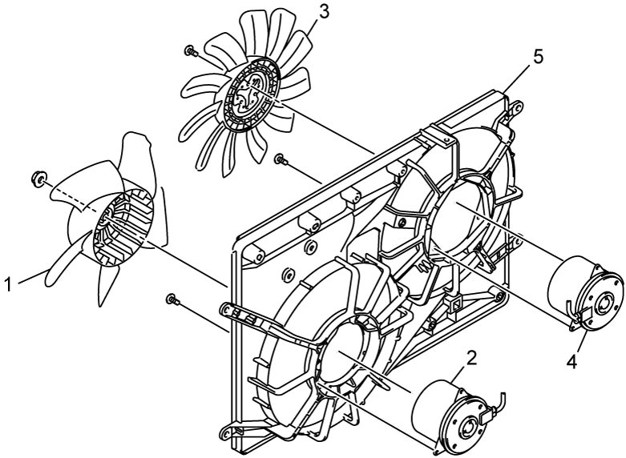

1F
| Radiator Cooling Fan Disassembly and Reassembly |
Disassembly
1)Remove radiator cooling main fan (1) from radiator cooling main fan motor (2).
2)Remove radiator cooling sub fan (3) from radiator cooling sub fan motor (4).
3)Remove radiator cooling main fan motor and radiator cooling sub fan motor from radiator cooling fan shroud (5).


 "Expand image")
Reassembly
Reverse disassembly procedure noting the following point.
 "Expand image")